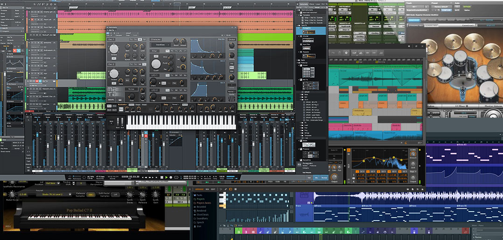
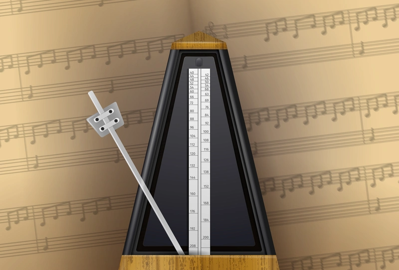

La producción de música electrónica se ha convertido en una de las formas de arte más accesibles y emocionantes de nuestra era. Con solo una computadora y los programas adecuados, puedes crear tracks que rivalizan con producciones profesionales. En este artículo, exploraremos los fundamentos esenciales para comenzar tu viaje en este fascinante mundo.
¿Qué necesitas para empezar?
Lo primero que necesitas es entender que la producción musical electrónica no requiere un estudio millonario. Los elementos básicos son:
1. Un DAW (Digital Audio Workstation)

El DAW es el corazón de tu estudio. Es el software donde crearás, grabarás, editarás y mezclarás tu música. Algunas opciones populares incluyen:
- Ableton Live: Perfecto para música electrónica y actuaciones en vivo
- FL Studio: Intuitivo y excelente para principiantes
- Logic Pro: Potente opción para usuarios de Mac
- Reaper: Económico y altamente personalizable
2. Auriculares o Monitores de Estudio

La calidad del sonido que escuchas es crucial. Los auriculares o monitores de estudio proporcionan una reproducción precisa y neutral del audio, permitiéndote tomar decisiones informadas durante la mezcla.
3. Interfaz de Audio (Opcional pero Recomendada)
Una interfaz de audio mejora la calidad del sonido y reduce la latencia. No es imprescindible al principio, pero se vuelve importante a medida que avanzas.
Conceptos Fundamentales
Ritmo y Tempo

El tempo se mide en BPM (beats por minuto). Cada género tiene rangos típicos:
- House: 120-130 BPM
- Techno: 125-135 BPM
- Dubstep: 140 BPM
- Drum & Bass: 160-180 BPM
Estructura de una Canción
La mayoría de tracks electrónicos siguen una estructura similar:
- Intro: Establece el mood (8-16 compases)
- Build-up: Construcción de tensión
- Drop: La parte más energética
- Breakdown: Sección más tranquila
- Second Drop: Variación del primer drop
- Outro: Cierre gradual
Tus Primeros Pasos
No intentes crear una obra maestra desde el principio. Empieza con proyectos simples:
- Experimenta con los presets de tu DAW
- Crea beats básicos usando samples
- Practica la programación de ritmos
- Estudia tracks que te gusten: analiza su estructura
- No te rindas si al principio suena "mal" - todos empezamos así
Conclusión
La producción musical electrónica es un viaje de aprendizaje constante. Lo más importante es empezar, experimentar y disfrutar del proceso creativo. En los próximos artículos, profundizaremos en técnicas específicas de síntesis, mezcla y masterización.
¿Listo para crear tu primera pista? ¡El único límite es tu imaginación!